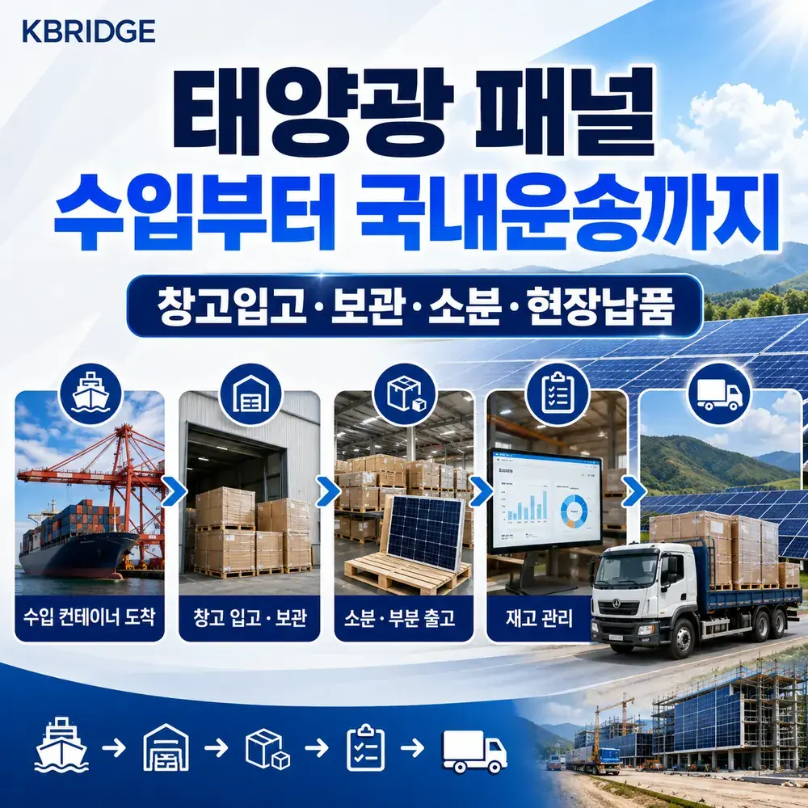
핵심 요약
태양광 패널은 수입 후 바로 전량 출고되지 않는 경우가 많습니다. 케이브릿지는 컨테이너 적출 → 창고 보관 → 주문·현장별 소분 → FLASH DATA 재고관리 → 납품지 배차를 한 흐름으로 연결해, 여러 업체에 작업을 나눠 맡길 때 생기는 수량 착오와 출고 지연을 줄입니다.
수입 후 납품까지, 한 번에 연결합니다
태양광 모듈은 팔레트 단위로 수입되지만 실제 출고는 공사 현장, 대리점, 프로젝트 일정에 따라 나눠 진행되는 경우가 많습니다. 따라서 단순 창고 보관만으로는 부족하고, 수량·시리얼·출고 대상이 정확히 연결되는 작업 체계가 필요합니다.
입고부터 출고까지 한 담당 흐름으로 연결합니다.
팔레트·시리얼·출고 수량을 단계별로 확인합니다.
필요 수량과 납품일에 맞춰 분할 출고합니다.
1. 컨테이너 적출과 입고 확인
적출은 컨테이너 안의 화물을 지게차 등으로 꺼내는 작업입니다. 패널 팔레트를 순서대로 하역하고, 외부 포장 상태와 입고 수량을 확인한 뒤 창고 보관 위치로 이동합니다.
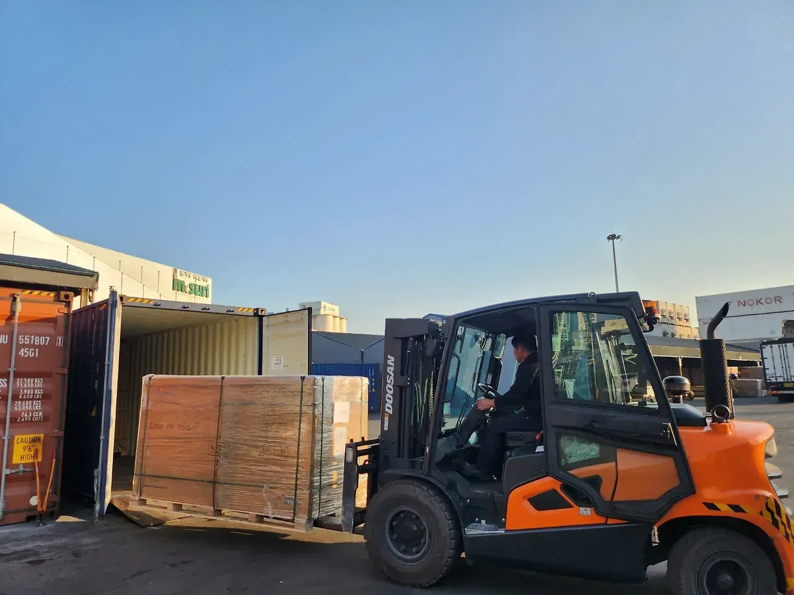
중량과 높이를 고려해 지게차로 안전하게 화물을 꺼냅니다.
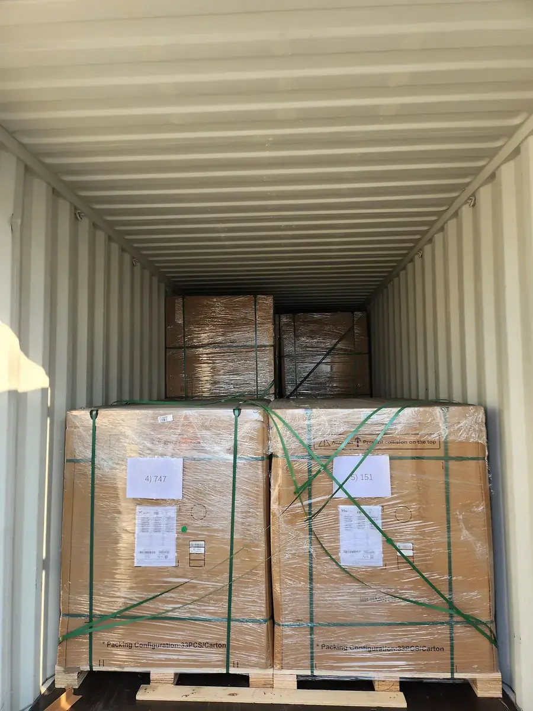
컨테이너 내부를 확인하고 입고 대상 팔레트의 누락 여부를 점검합니다.
- 컨테이너 번호와 입고 예정 물량 확인
- 팔레트 외관, 밴딩, 랩핑 상태 확인
- 파손 또는 눌림이 보이는 화물은 별도 구분
- 입고 수량과 실제 적출 수량 대조
2. 태양광 패널 전용 보관
태양광 패널은 유리면과 프레임을 포함한 제품이므로, 보관 중 충격이나 포장 손상이 생기지 않도록 팔레트 상태를 유지하고 작업 동선을 분리하는 것이 중요합니다. 입고 후에는 고객사·제품·로트별로 구획을 나눠 보관합니다.
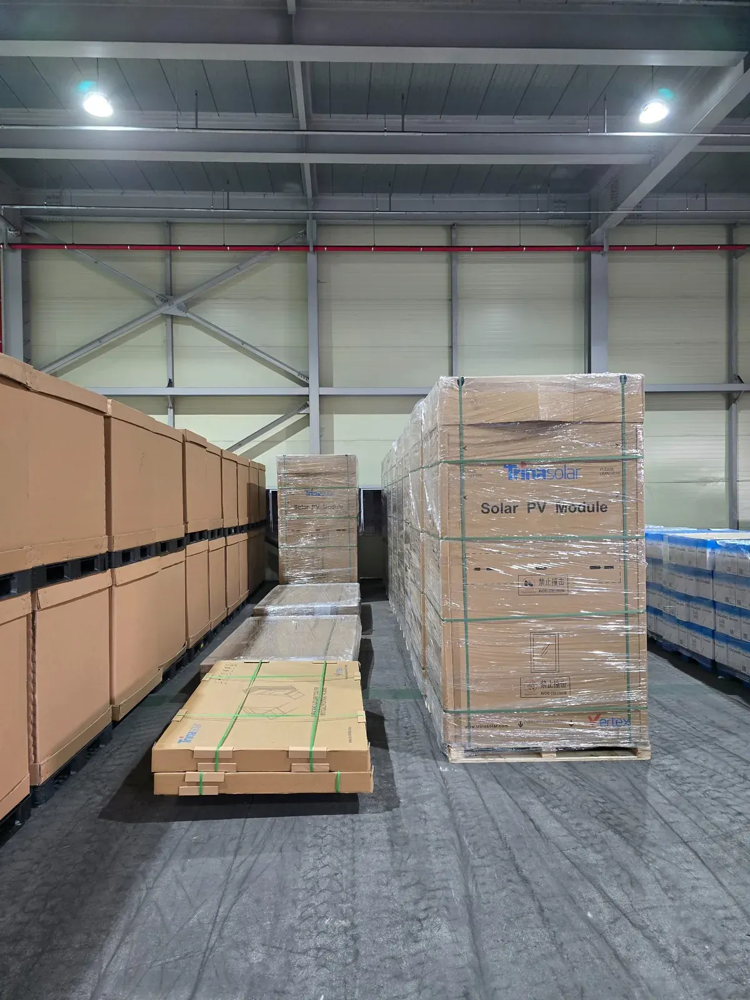
포장과 밴딩 상태를 유지해 창고 안 지정 위치로 이동합니다.
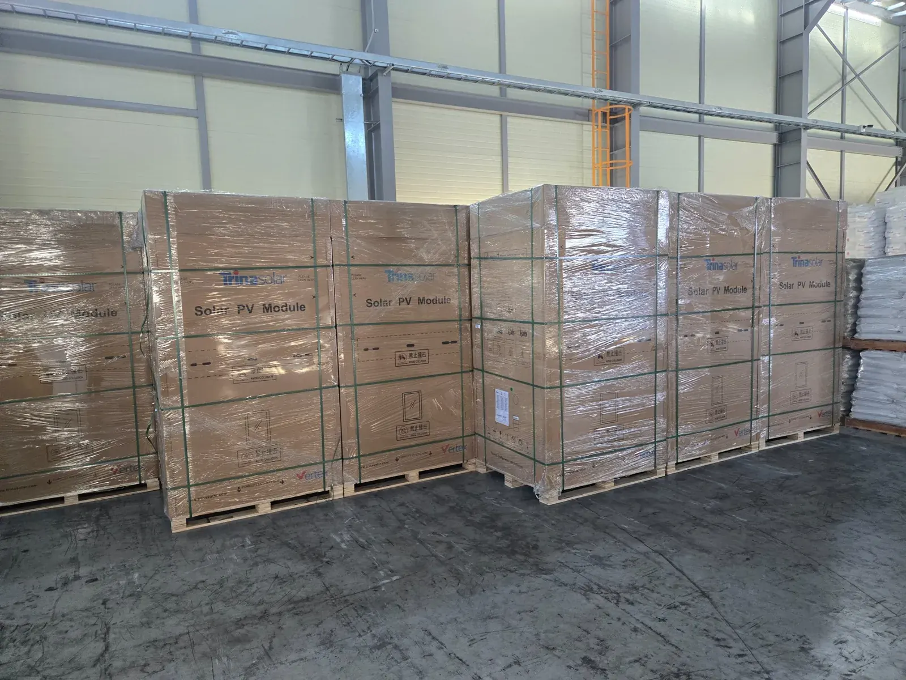
팔레트를 식별하기 쉽도록 배치하고 혼재 가능성을 줄입니다.
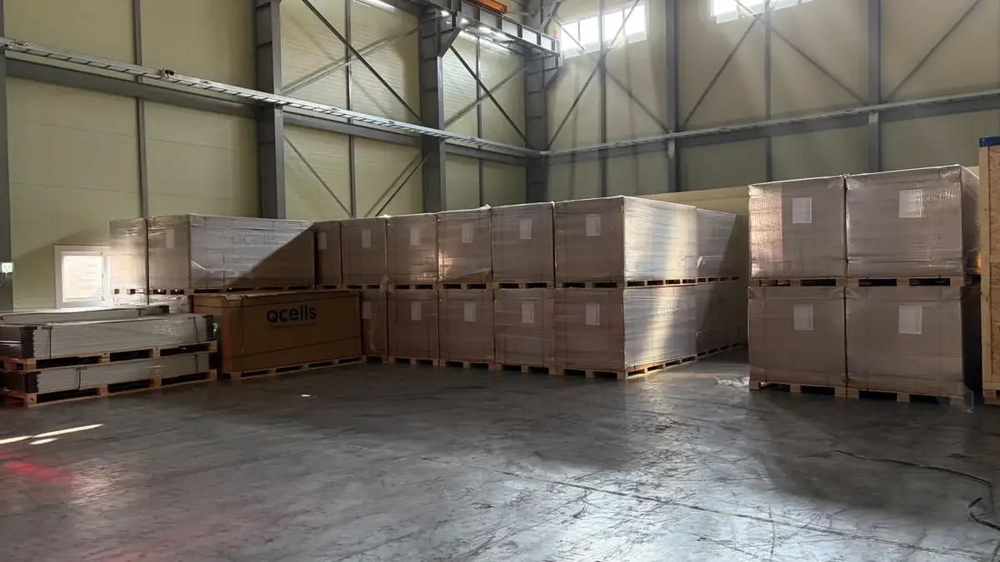
장기 보관 물량과 출고 예정 물량을 구분해 작업 동선을 확보합니다.
보관 조건과 적재 방식은 패널 제조사의 포장 지침, 팔레트 규격, 창고 여건에 따라 조정됩니다.
3. 주문·현장별 소분 및 분할 작업
한 팔레트 전체가 아니라 일부 수량만 출고해야 할 때는 포장을 개봉해 필요한 수량을 분리하고, 남은 재고가 다시 안전하게 보관될 수 있도록 재정리합니다. 패널과 부속품이 함께 입고된 경우에는 출고 목록에 맞춰 각각 구분합니다.
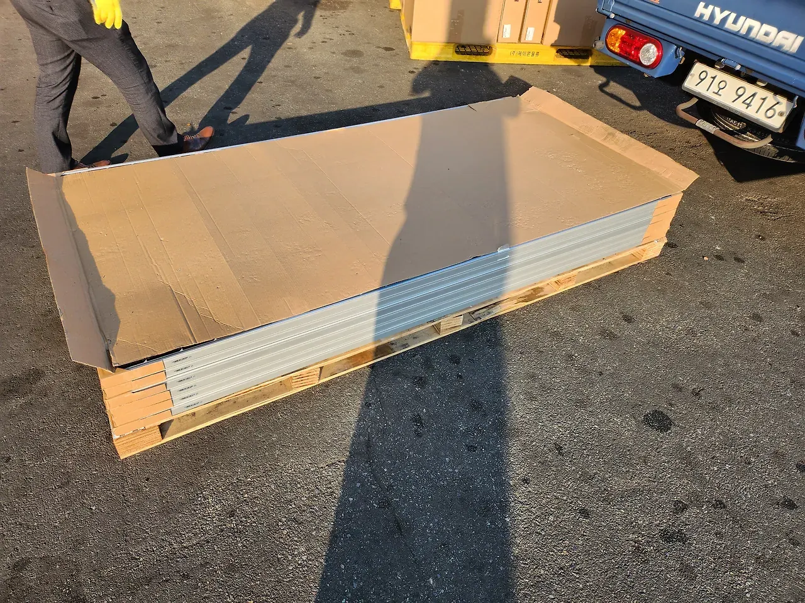
현장 또는 주문 건별 필요 수량을 확인한 뒤 패널을 분리합니다.
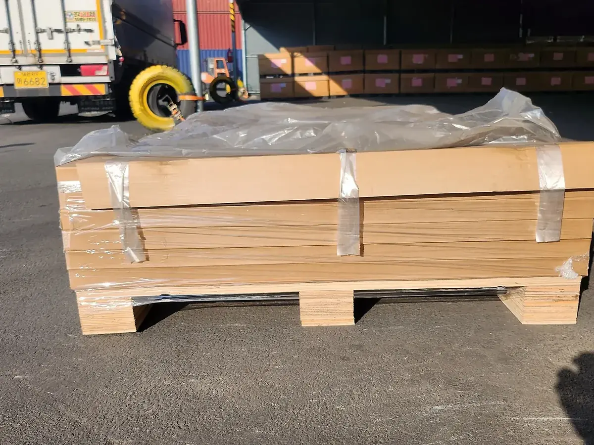
분할 후 남은 제품은 보호 포장과 밴딩을 보완해 다시 보관합니다.
- 출고 요청 수량과 실제 분리 수량 확인
- 모델명·규격이 다른 제품 혼입 방지
- 분할 후 남은 재고 수량 즉시 반영
- 운송 중 움직임을 줄이도록 재포장
4. FLASH DATA 기반 재고관리
태양광 모듈에는 제품 식별을 위한 시리얼 번호가 있고, 출고 요청에 따라 평균 출력이나 색상 코드 등 관리 항목을 함께 확인해야 하는 경우가 있습니다. 케이브릿지는 고객이 제공한 FLASH DATA와 실물 라벨을 대조해 팔레트별·출고 건별 재고를 구분합니다.
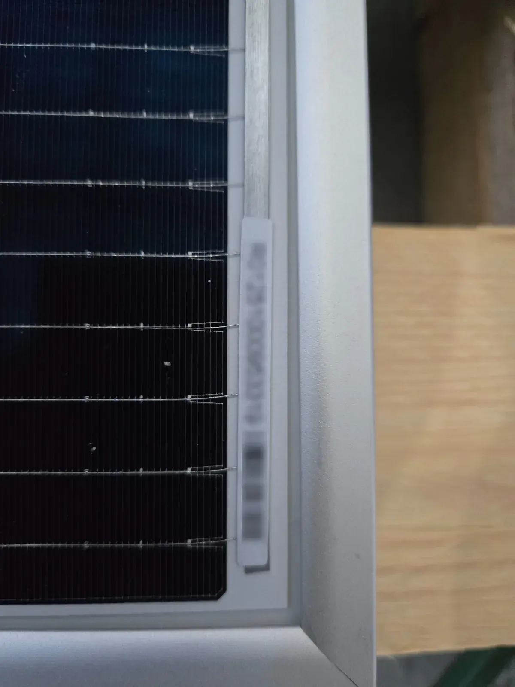
제품 측면의 식별 라벨을 기준으로 개별 모듈 정보를 확인합니다.
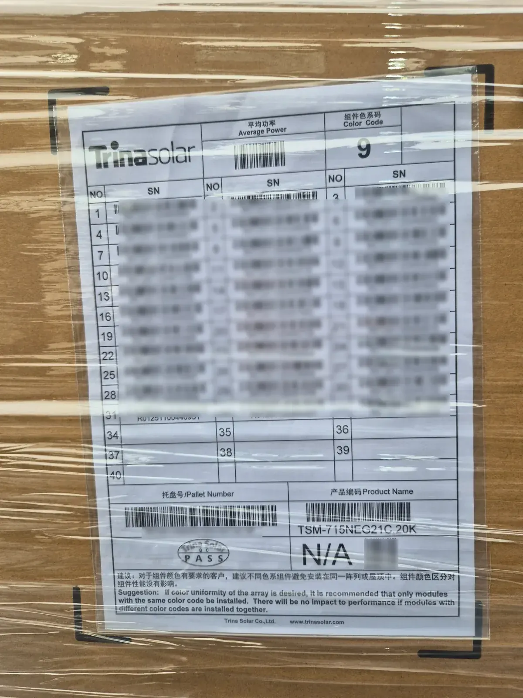
팔레트 라벨의 시리얼 목록, 출력 정보, 색상 코드 등을 출고 자료와 대조합니다.
입고 단위와 보관 위치를 연결합니다.
분할 수량과 대상 시리얼을 구분합니다.
출고 후 남은 수량을 다시 반영합니다.
5. 납품지별 배차와 운송
분할 작업과 출고 확인이 끝나면 화물 크기, 중량, 상차 방식, 현장 진입 조건에 맞는 차량을 배정합니다. 지게차 상하차가 필요한지, 크레인 작업이 필요한지, 납품 시간이 지정되어 있는지를 확인해 배차합니다.
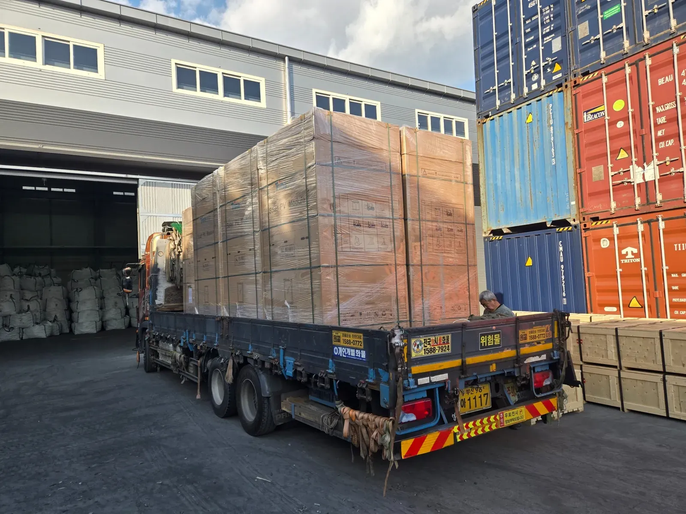
패널 팔레트를 차량 적재함에 고정하고 납품지로 운송합니다.
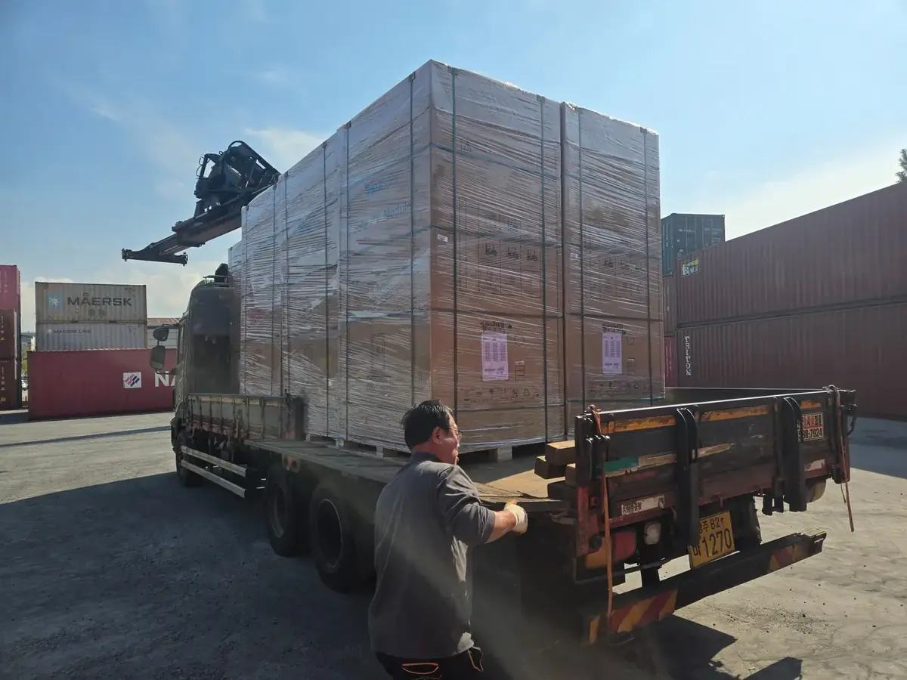
상하차 장비와 현장 진입 여건을 고려해 적합한 차량을 배정합니다.
- 출고 수량과 팔레트 수량 최종 확인
- 차량 적재 가능 규격과 중량 검토
- 상차·하차 장비 필요 여부 확인
- 현장 주소, 연락처, 납품 가능 시간 확인
태양광 패널 물류 상담 전 필요한 정보
아래 정보가 준비되어 있으면 창고 입고부터 소분, 재고관리, 배차까지 필요한 작업 범위를 빠르게 확인할 수 있습니다.
| 구분 | 확인 정보 |
|---|---|
| 수입 정보 | 입항 예정일, 컨테이너 수량, 도착 항만, 통관 진행 여부 |
| 제품 정보 | 모델명, 팔레트 수량, 팔레트 규격·중량, 총 모듈 수량 |
| 보관 조건 | 예상 보관 기간, 고객사·프로젝트별 구분 기준 |
| 소분 계획 | 출고 단위, 회차별 수량, 재포장 필요 여부 |
| 재고 자료 | FLASH DATA, 시리얼 리스트, 팔레트 번호 또는 제품 식별 기준 |
| 납품 조건 | 납품지 주소, 희망 일자, 현장 진입 조건, 하차 장비 여부 |
이런 기업에 적합합니다
- 태양광 패널을 수입하지만 자체 창고와 작업 인력이 없는 기업
- 프로젝트별로 출고 수량과 일정이 달라 분할 출고가 필요한 기업
- 시리얼 번호와 FLASH DATA 기준으로 제품을 구분해야 하는 기업
- 보관, 소분, 재고관리, 국내운송을 한 업체에 맡기고 싶은 기업
자주 묻는 질문
Q. 수입 통관부터 창고 입고까지 함께 진행할 수 있나요?
Q. 팔레트 전체가 아니라 일부 수량만 출고할 수 있나요?
Q. FLASH DATA 기준으로 특정 제품을 골라 출고할 수 있나요?
Q. 보관 기간이 짧아도 이용할 수 있나요?
태양광 패널 수입 물류, 구간별로 나누지 마세요
컨테이너 적출, 창고 보관, 소분 작업, FLASH DATA 재고관리, 납품지 배차까지 한 번에 연결해드립니다. 입항 일정과 제품 수량을 알려주시면 필요한 작업 범위를 확인해 안내합니다.